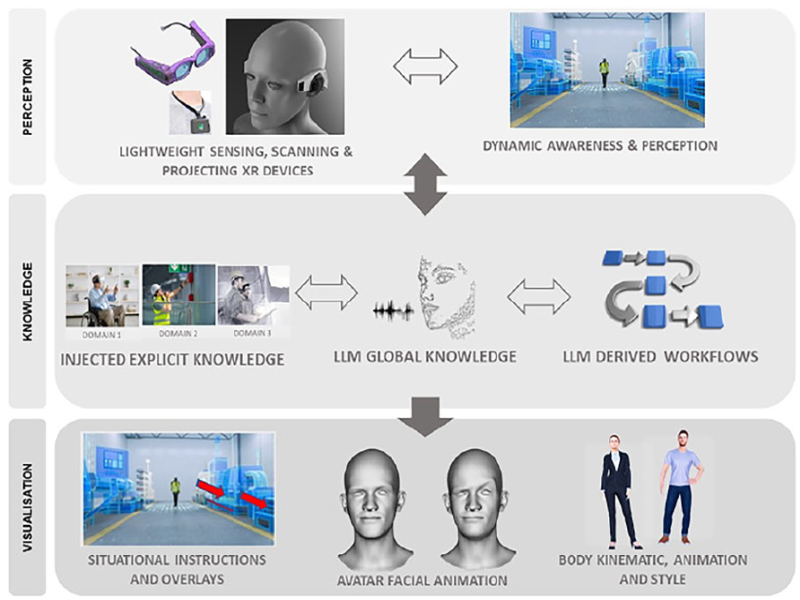

IEEE CG&A Workshop
@ ACM SIGGRAPH Asia 2025, Hong Kong
Dec 17, Location: to be announced
This half-day workshop, hosted by IEEE Computer Graphics and Applications (CG&A), showcases the intersection of cutting-edge research and practical innovation in computer graphics. As part of CG&A's M1C2 (Magazine First, Conference Second) initiative, this workshop features recent CG&A publications selected for their relevance and impact.
|
Design and Implementation of the Transparent, Interpretable, and Multimodal (TIM) AR Personal Assistant
Authors: Erin McGowan, Joao Rulff, Sonia Castelo, Guande Wu, Shaoyu Chen, Roque Lopez, Bea Steers, Iran R. Roman, Fábio F. Dias, Jing Qian, Parikshit Solunke, Michael Middleton, Ryan McKendrick, Cláudio T. Silva |
|  |
Next Generation XR Systems—Large Language Models Meet Augmented and Virtual Reality
Authors: Muhammad Zeshan Afzal, Sk Aziz Ali, Didier Stricker, Peter Eisert, Anna Hilsmann, Daniel Perez-Marcos, Marco Bianchi, Sonia Crottaz-Herbette, Roberto De Ioris, Eleni Mangina, Mirco Sanguineti, Ander Salaberria, Oier Lopez de Lacalle, Aitor García-Pablos, Montse Cuadros |
|
AuraGenome: An LLM-Powered Framework for On-the-Fly Reusable and Scalable Circular Genome Visualizations
Authors: Chi Zhang, Yu Dong, Yang Wang, Yuetong Han, Guihua Shan, Bixia Tang |
|
Do Language Model Agents Align with Humans in Rating Visualizations? An Empirical Study
Authors: Zekai Shao, Yi Shan, Yixuan He, Yuxuan Yao, Junhong Wang, Xiaolong Zhang, Yu Zhang, Siming Chen |
|
Enhancing Visual Analysis in Person Re-Identification With Vision-Language Models
Authors: Wang Xia, Tianci Wang, Jiawei Li, Guodao Sun, Haidong Gao, Xu Tan, Ronghua Liang |
|
FashionCook: A Visual Analytics System for Human–AI Collaboration in Fashion E-Commerce Design
Authors: Yuheng Shao, Shiyi Liu, Gongyan Chen, Ruofei Ma, Xingbo Wang, Quan Li |
|
Meet-in-Style: Text-Driven Real-Time Video Stylization Using Diffusion Models
Authors: David Kunz, Ondřej Texler, David Mould, Daniel Sýkora |
|
Unified Visual Comparison Framework for Human and AI Paintings Using Neural Embeddings and Computational Aesthetics
Authors: Yilin Ye, Rong Huang, Kang Zhang, Wei Zeng |
|
Should I Render or Should AI Generate? Crafting Synthetic Semantic Segmentation Datasets With Controlled Generation
Authors: Omar A. Mures, Manuel Silva, Manuel Lijó-Sanchez, Emilio J. Padrón, Jose A. Iglesias-Guitian |
|
MarsIPAN: Optimization and Negotiations in Mars Sample Return Scheduling Coordination
Authors: Jasmine T. Otto, Malika Khurana, Noah Deutsch, Benjamin P. S. Donitz, Oskar Elek, Scott Davidoff |
|
A Cosmic View of Life on Earth: Hierarchical Visualization of Biological Data Using Astronomical Software
Authors: Wandrille Duchemin, Takanori Fujiwara, Hollister W. Herhold, Elias Elmquist, David S. Thaler, William Harcourt-Smith, Emma Broman, Alexander Bock, Brian P. Abbott, Jacqueline K. Faherty |
|
2024 IEEE Scientific Visualization Contest Winner: PlumeViz—Interactive Exploration for Hydrothermal Plumes
Authors: Yiming Shao, Chengming Liu, Zhiyuan Meng, Shufan Qian, Peng Jiang, Yunhai Wang, Qiong Zeng |
Workshop Chair: Dr. Pak Chung Wong, Editor-in-Chief, IEEE CG&A
Workshop Chair and Local Liaison: Prof. Chi-Wing (Philip) Fu, CUHK